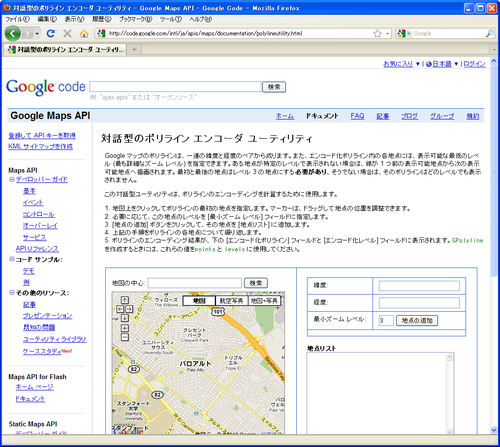
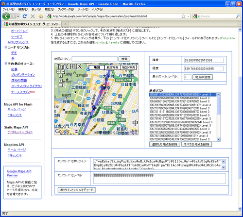

エンコード化されたポリラインによる指定
パスに含まれるポイントが非常に長い場合、URLが非常に長くなってしまいます。そのような場合は、パスに含まれるポイントの集合を決められた方法でエンコードしたものを記述することができます。エンコード化することで必要な文字数を少なくすることができます。
この書式を使う場合には「enc:エンコード化されたデータ」の形式で指定します。
path=スタイル|enc:エンコード化されたデータ
エンコード化の方法についてはGoogleが提供しているドキュメントの「エンコード化ポリライン アルゴリズム方式」にて解説されています。詳しいことは分かりませんが興味のある方は読んで見てください。
簡単にポイントの集合をエンコード化するためのツールとしてGoogleにて「対話型のポリライン エンコーダ ユーティリティ」も用意されています。

ユーティリティ上でポイントをクリックして追加していくと画面下にエンコード化された文字列が表示されます。

この文字列をencの後に記述することで、一つ一つポイントの座標を指定する代わりとなります。
記述例としては次のようになります。
http://maps.google.com/maps/api/staticmap? path=fillcolor:0x007F7F|enc:i~wxEahatY}_AqVqj@_Mmr@sH_k@mLcm@c(以降省略)
※実際は1行です。
非常に多いポイントを指定する場合などはこの方式を使用することでURLとして記述する文字列を少なくすることができます。
サンプル
では実際に試してみます。
http://maps.google.com/maps/api/staticmap?
¢er=35.690625,139.734764
&zoom=11
&size=400x400
&path=fillcolor:red|enc:i~wxEahatY}_AqVqj@_Mmr@sH_k@mLcm@cHqc@~j@}]l[u_@n¥v@fsArU|q@rKfeA~EvpBjy@zZbt@vPhgAlT`bAdBje@oN~lAgB`pA~E|fAct@trAqd@hl@yo@dj@{ZcbAekAu`Biw@uz@mx@uaAdAgw@c^??ec@yQ
&sensor=false
-
今回は山手線の各駅を結ぶようなパスを作成しました。
( Written by Tatsuo Ikura )

著者 / TATSUO IKURA
初心者～中級者の方を対象としたプログラミング方法や開発環境の構築の解説を行うサイトの運営を行っています。